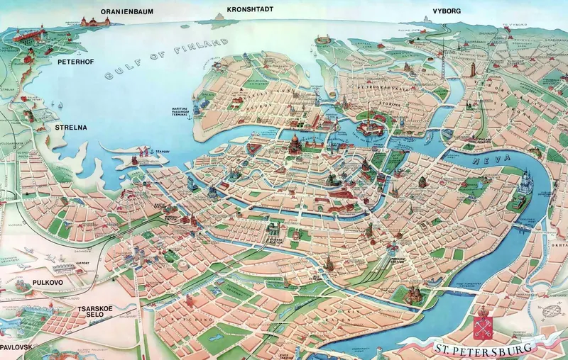
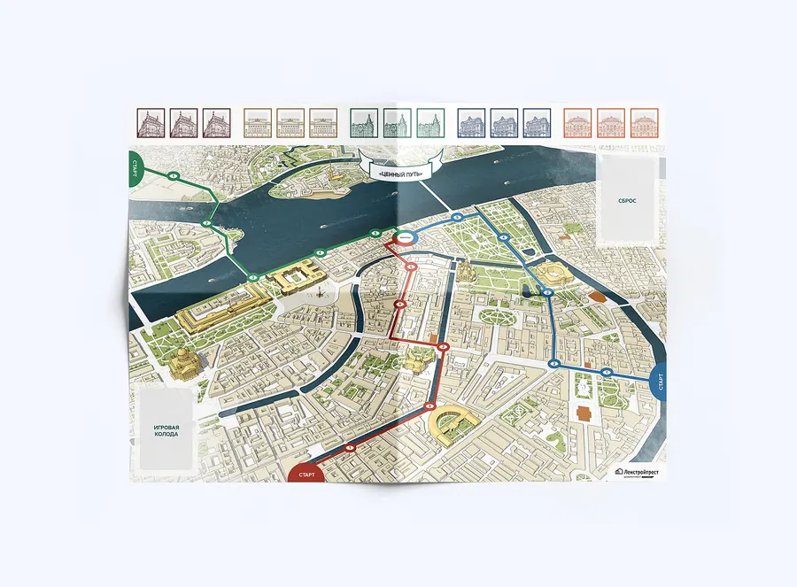
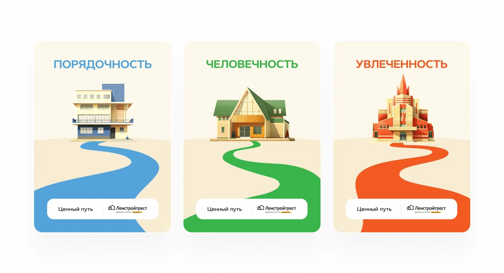
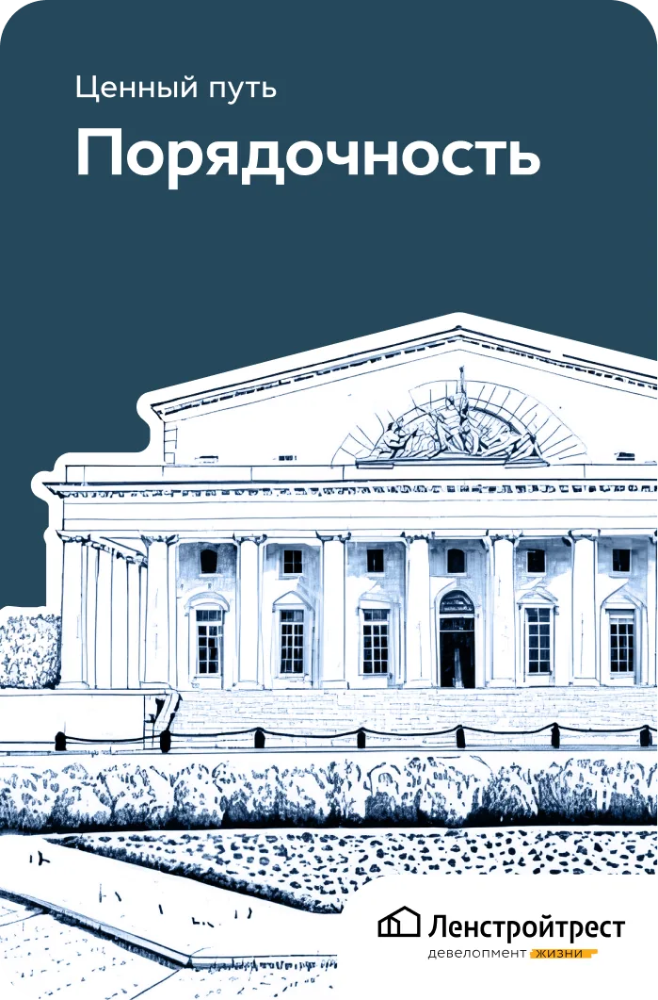
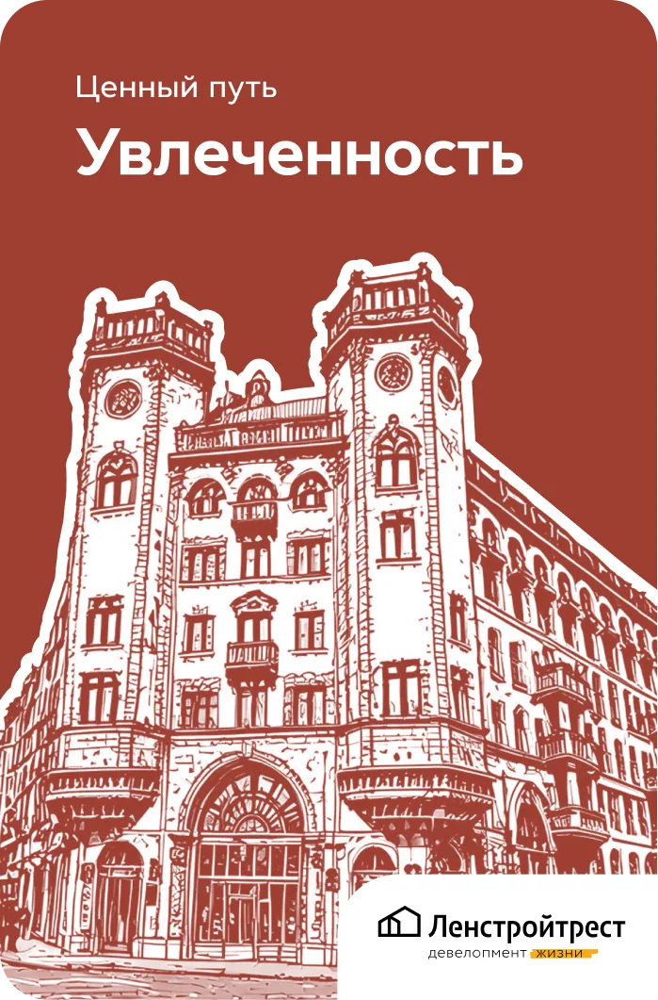
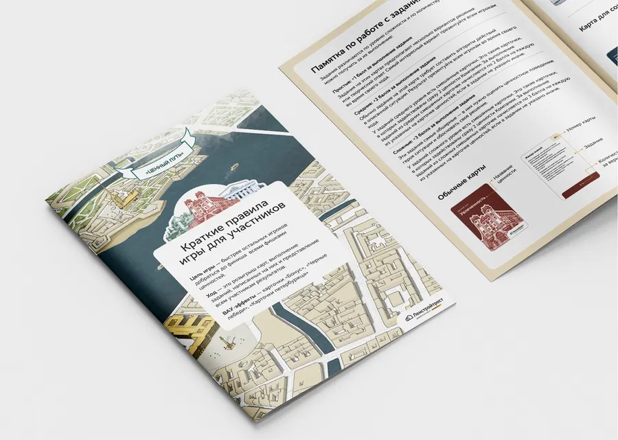
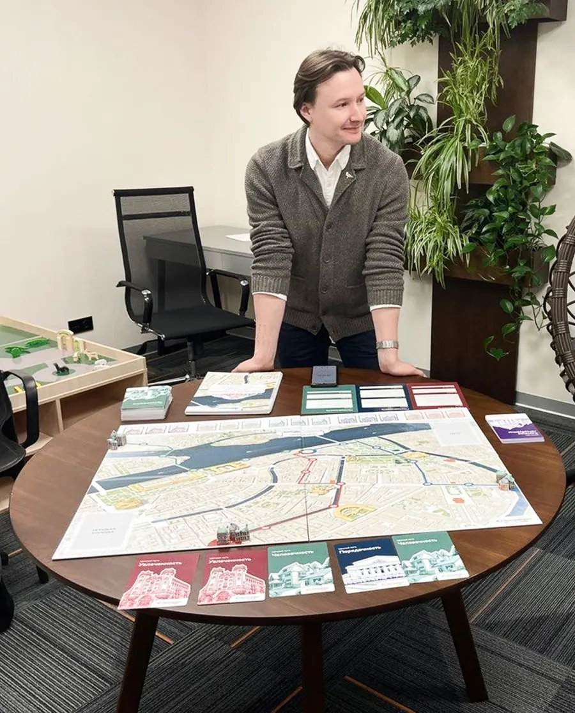

«Ценный путь»03
Визуальные материалы для корпоративной настольной игры о ценностях компании: игровое поле с картой Петербурга, более 150 карточек, правила и коробка. Всё подготовлено к печати.

Игра, которая помогает передавать корпоративную культуру.
«Ценный путь» — настольная игра компании TSQ Consulting. Она разработана для закрепления корпоративной культуры и популяризации ценностей внутри Ленстройтреста. Игроки в роли архитекторов и градостроителей развивают Петербург и воплощают профессиональные идеи в жизнь.
Игровое поле — детализированная карта города с достопримечательностями и главным офисом компании.
Создать визуал игры на основе фирменного стиля заказчика и подготовить его к производству.
Я участвовала в разработке визуальной концепции игровых карт и подготовке игровых материалов к печати в составе команды TSQ Consulting, а также в подготовке кейса для публикации на сайте компании.
3D-модель реального Петербурга, доработанная вручную.
Сетку модели обработали в SketchUp, смоделировали драфты достопримечательностей и дорисовали ключевые элементы в Photoshop. Рассматривали два стиля: яркую «мультяшную» рисовку из дополнительной палитры фирменного стиля и приглушённую палитру со стилизацией под архитектурный генплан. Заказчик выбрал второй вариант.






Архитектурные стили — как метафора ценностей.
Визуальная концепция построена вокруг архитектурных стилей, которые отражают категории основной колоды. Каждая категория связана с одной из корпоративных ценностей: «Порядочность», «Увлечённость», «Человечность».
Выбран стиль архитектурных чертежей: он лаконичный и подчёркивает связь со строительством. Вместо абстрактных зданий команда предложила реальные постройки Петербурга — и визуал стал ближе к игре и самому городу.





На лицевой стороне — карта, на боковых — иллюстрации ценностей.
Мануал для ведущего и памятки «Краткие правила игры» и «Поведенческие индикаторы» продолжают тот же стиль, что и поле.

Объёмные здания Петербурга вместо привычных фишек.
Фишки изготовила мастерская «Легко-Легко»: пять комплектов по три фишки и отдельная фишка дилера.





| Элемент | Количество |
|---|---|
| Игровое поле | 1 |
| Карточки «Задания» | 120 |
| Карточки «Бонусы» | 10 |
| Карточки «Чёрные лебеди» | 15 |
| «Карточки петербуржца» | 30 |
| Фишки | 5 × 3 + дилер |
| Мануал для ведущего | 1 |
| Памятки «Краткие правила игры» и «Поведенческие индикаторы» | 2 |
«Ценный путь» стал частью корпоративной жизни компании.
За три месяца команда TSQ Consulting разработала визуальные материалы игры и подготовила их к производству. Игра помогает поддерживать культуру изнутри и передавать её новым сотрудникам.